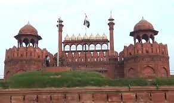
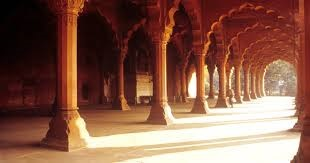
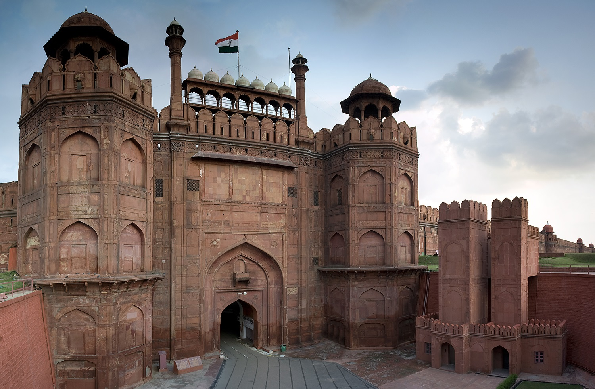

About the Red Fort
The Red Fort, also known as Lal Qila, is one of India's most iconic monuments. It is located in Old Delhi and served as the main residence of Mughal emperors for nearly 200 years, from 1648 until the British took control in 1857. The fort is a UNESCO World Heritage Site and is renowned for its grand architecture, intricate decorations, and historical significance.
History
Mughal Era (Construction and Early Use) Commissioned by Mughal Emperor Shah Jahan in 1638, the Red Fort was built as the new capital, shifting from Agra to Delhi. Construction took 10 years (1638–1648) and was supervised by the architect Ustad Ahmad Lahori, the same architect who designed the Taj Mahal. The fort was originally known as Qila-e-Mubarak (Blessed Fort). It served as the political and cultural center of the Mughal Empire. 2. Decline of Mughal Power The Mughal Empire weakened after Aurangzeb's reign (1658–1707). In 1739, Persian ruler Nadir Shah invaded Delhi and looted the fort, including the famous Peacock Throne. The fort was further attacked by the Marathas in the late 18th century and later came under British control after the Second Anglo-Maratha War (1803). 3. British Rule and 1857 Revolt The Red Fort was a major site during the Indian Rebellion of 1857 (First War of Independence). After suppressing the revolt, the British exiled the last Mughal Emperor, Bahadur Shah II, and destroyed parts of the fort, including gardens and some palaces. It was used as a military camp by the British. 4. Post-Independence and Modern Era After India gained independence in 1947, the first Prime Minister of India, Jawaharlal Nehru, raised the national flag at the Red Fort. Since then, it has been a symbol of India's independence, and every year on August 15, the Prime Minister hoists the national flag and delivers a speech. In 2007, UNESCO designated the Red Fort as a World Heritage Site.
Architecture
Layout and Design The fort is octagonal in shape and covers 254 acres. It has 2 main gates: Lahori Gate (main entrance) and Delhi Gate. The walls are 2.5 km long and vary in height from 18 meters (river-facing side) to 33 meters (city-facing side). The fort complex includes palaces, halls, mosques, gardens, and markets. 2. Important Structures Inside the Red Fort a) Lahori Gate The main entrance of the fort, facing Lahore (now in Pakistan). Every year on Independence Day (August 15), the Prime Minister hoists the Indian flag here. b) Delhi Gate The southern gate, similar in design to the Lahori Gate. c) Diwan-i-Aam (Hall of Public Audience) A large hall where the emperor addressed the public and heard their grievances. The throne area was decorated with marble and semi-precious stones. d) Diwan-i-Khas (Hall of Private Audience) A smaller, more luxurious hall where the emperor met with important dignitaries. The famous Peacock Throne was once placed here. Inscription: "If there is a paradise on Earth, it is this, it is this, it is this." e) Rang Mahal (Palace of Colors) The residential palace for the emperor’s wives and mistresses. Decorated with colored stones, mirrors, and a central water fountain. f) Mumtaz Mahal and Khas Mahal Mumtaz Mahal was used for royal ladies. Khas Mahal was the emperor’s personal residence. g) Moti Masjid (Pearl Mosque) A small, white marble mosque built by Aurangzeb for his personal prayers. h) Hayat Bakhsh Bagh (Life-Giving Garden) A beautiful garden with fountains, water channels, and pavilions.
Gallery
Explore the stunning visuals of the Red Fort:
  
Comments
We would love to hear your thoughts about the Red Fort. Please leave your comments below: